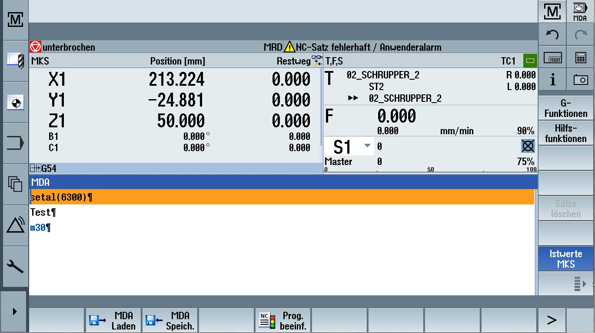

When the sidescreen is activated, a navigation bar is shown on the left-hand side of the user interface.
This navigation bar can be used to switch directly to the desired operating area, and to show and hide the sidescreen.
See also:
Sidescreen with pages for the ABC keyboard and/or machine control panel
Overview
Standard widgets